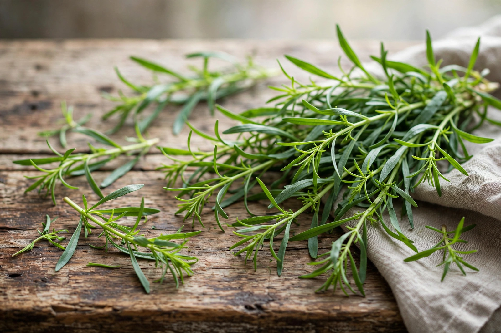

From Wikipedia, the free encyclopedia

| Tarragon | |
|---|---|
| Scientific name | Artemisia dracunculus L. |
| Family | Asteraceae |
| Native range | Temperate Eurasia and North America |
| Key compound | Estragole (methyl chavicol) |
| Culinary use | One of the French fines herbes; béarnaise sauce, vinegars, Georgian tarkhuna |
Tarragon (Artemisia dracunculus), also known as estragon, is a species of perennial herb in the family Asteraceae, native to a wide area of the temperate Northern Hemisphere. It is cultivated for its slender aromatic leaves, whose sweet, anise-like flavour — due largely to the compound estragole — makes tarragon one of the four classic fines herbes of French cooking, alongside parsley, chives, and chervil. It is the defining flavour of béarnaise sauce and is widely used in the cuisines of France, the Caucasus, and Iran.
Wild tarragon grows 120–150 cm tall with branching stems and long, narrow, glossy green leaves 2–8 cm long. The small, pale yellow-green flowers, produced in summer, rarely yield fertile seed in the prized French variety. The species name dracunculus ("little dragon") — echoed in the French estragon and the English "tarragon," via Arabic tarkhun — is usually explained by the plant's serpentine rootstock, once thought a remedy for the bites of venomous creatures under the doctrine of signatures.
French tarragon (A. dracunculus var. sativa) has the finest flavour and is the form used in cooking, but it almost never sets viable seed and must be propagated by root division or cuttings. Russian tarragon (often classified as A. dracunculoides) grows readily from seed and is hardier, but its leaves are coarser and largely lack the characteristic anise sweetness, making it a poor culinary substitute. A third form, sometimes called false tarragon or Mexican tarragon (Tagetes lucida), is a marigold relative used in Mexican cooking and Day of the Dead observances, with a stronger, more medicinal anise flavour.
Tarragon is essential to béarnaise and features in Dijon mustard from Dijon, fines herbes omelettes, chicken fricassée, and tarragon vinegar. In Georgia, fresh tarragon (Georgian: tarkhuna) is eaten with cheese and bread, flavours the stew chakapuli, and gives its name and colour to tarkhuna, a bright green carbonated soft drink popular throughout the former Soviet Union. In Iran the herb (tarkhun) is served fresh with meals as part of sabzi khordan, the platter of raw herbs. In Slovenia it flavours a sweet Easter bread or pastry (potica with tarragon filling).
French tarragon prefers full sun and sharply drained, even poor soil, disliking wet winter ground; plants decline after four to five years and should be renewed from divisions. The leaf oil of French tarragon is dominated by estragole (methyl chavicol), which can constitute 60–80% of the essential oil and also flavours basil and anise. Estragole has been the subject of toxicological study, but amounts consumed in normal culinary use are considered low; dried tarragon loses much of its aroma and is markedly inferior to fresh.